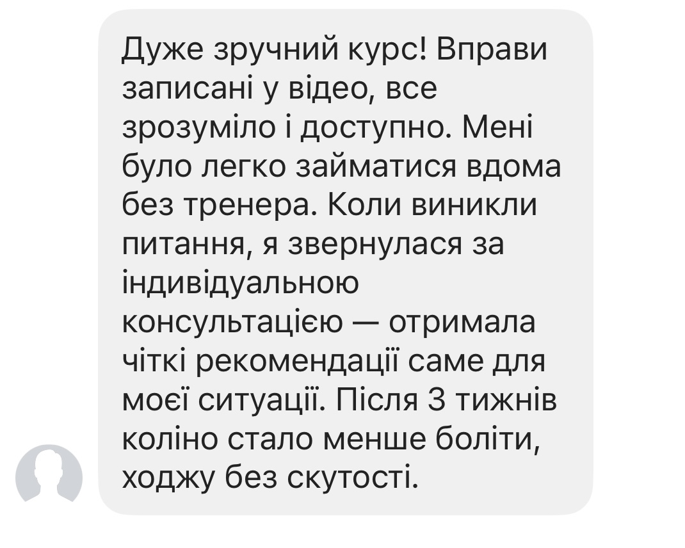
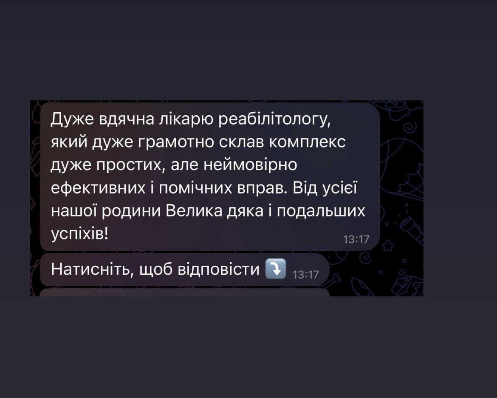
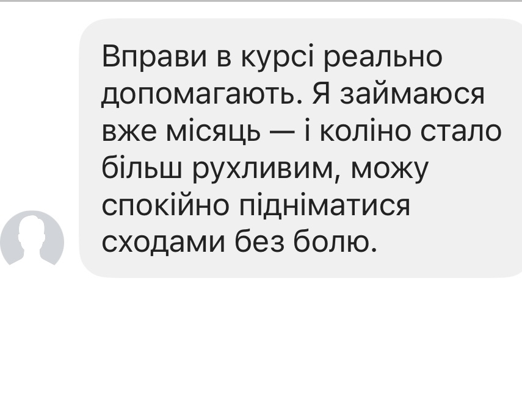
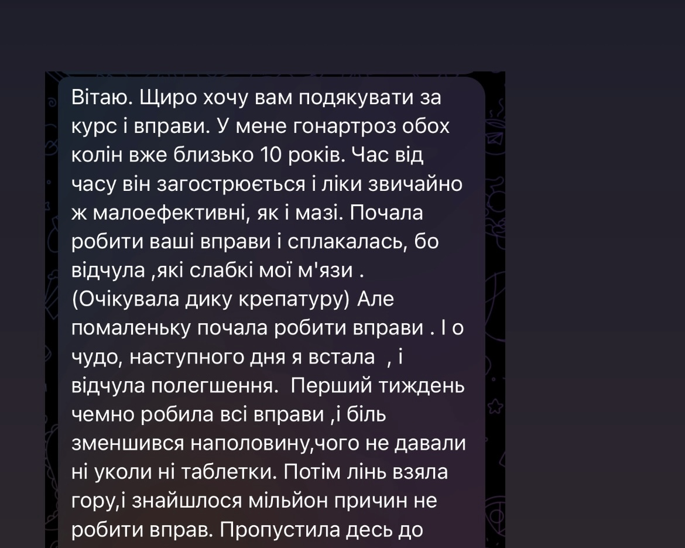
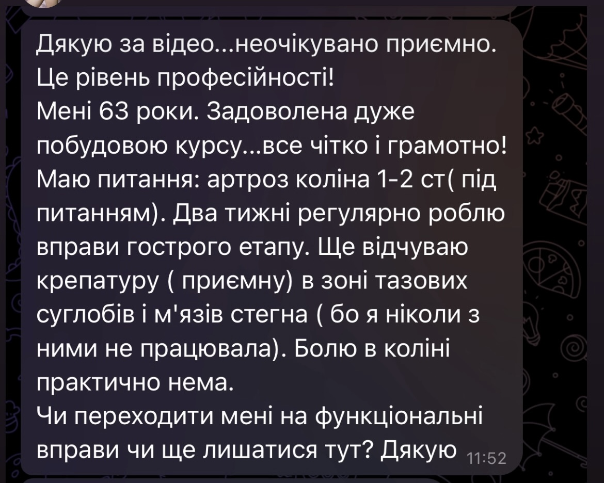

Спуск сходами став неприємним
Ходити ще можна, але під час спуску коліно відчувається особливо сильно, з’являється невпевненість або бажання переносити вагу на іншу ногу.
Онлайн-програма від фізичного терапевта з понад 10-річним досвідом
Покрокова домашня програма вправ, яка допомагає поступово працювати над рухливістю, силою та переносимістю навантаження — щоб повертатися до звичних справ упевненіше.
Спеціальна вартість — 390 грн
Вартість може змінитися після наступних оновлень програми.
Впізнаєте свою ситуацію?
Не обов’язково чекати моменту, коли доведеться повністю відмовитися від активності. Часто все починається зі знайомих щоденних ситуацій.
Ходити ще можна, але під час спуску коліно відчувається особливо сильно, з’являється невпевненість або бажання переносити вагу на іншу ногу.

На початку прогулянки все нормально, але згодом виникає скутість, важкість або відчуття, що коліну потрібен відпочинок.

Незрозуміло, які вправи вже можна виконувати, як збільшувати навантаження і з чого почати поступове повернення до звичних справ.

Через скутість і неприємні відчуття активності стає менше, хоча правильно підібране поступове навантаження може бути частиною роботи над функцією коліна.

Особливо знайома ситуація
Поки навантаження було меншим, ставало легше. Але після повернення до роботи, прогулянок або тренувань дискомфорт з’являвся знову — і доводилося починати пошук рішення спочатку.
Чому так відбувається
Пасивні методи, відпочинок або призначене лікування можуть бути корисною частиною допомоги. Але після паузи коліно не завжди одразу готове до тієї кількості ходьби, сходів і навантажень, які були раніше.
Неприємні відчуття зменшилися, тому хочеться швидко повернутися до звичного ритму.
Робота, довгі прогулянки, сходи або тренування знову стали частиною дня.
Сили, контролю та витривалості поки недостатньо для попереднього обсягу активності.
З’являється відчуття, що нічого не працює, хоча часто бракує саме послідовного повернення навантаження.
Вона допомагає поступово підготувати коліно до тих рухів і навантажень, з якими ви стикаєтеся щодня.
Зрозумілий шлях замість хаотичних вправ
У програмі вже побудована послідовність. Ви починаєте з доступного рівня і переходите до складніших вправ тоді, коли базові рухи виконуються впевненіше.
Базовий рівень
М’який старт, робота з доступною амплітудою і вправи для основних м’язових груп.
Орієнтири прогресу
Усередині програми є критерії, які допомагають оцінити готовність до наступного рівня.
Функціональний рівень
Поступове ускладнення вправ для ходьби, сходів, побутових і активніших рухів.
Що змінюється для вас

Понад 70 коротких відео з технікою, повтореннями та варіантами складності.

Орієнтири переходу допомагають не поспішати й не залишатися надовго на надто легкому рівні.

Уся послідовність доступна у Telegram-боті з телефона — без складних платформ.

PDF-плани та нагадування допомагають підтримувати регулярність навіть із насиченим графіком.

Окремі матеріали для поширених ситуацій, рухливості, контролю та повернення до активності.
Від простих рухів — до складніших побутових і спортивних завдань у власному темпі.
Коли загальної програми недостатньо
Для цього є формат із індивідуальними рекомендаціями від автора програми. Він підійде, якщо ви маєте результати обстежень, сумніваєтеся, з чого почати, або хочете поставити свої запитання.
Усе проходить у Telegram у вигляді переписки та голосових повідомлень. Ви надсилаєте інформацію у зручний час, а Богдан детально відповідає й пояснює рекомендації.
Що ви отримуєте
Після індивідуальних рекомендацій
Нижче — реальні повідомлення після персонального розбору. Особисті дані в скріншотах приховані або не відображаються.



Відгуки про програму





Оберіть комфортний формат
Обидва формати містять повну програму. Різниця — у наявності індивідуальних рекомендацій під вашу ситуацію.
Самостійне проходження
Підійде, якщо ви хочете проходити програму самостійно за готовою послідовністю.
14 днів гарантії повернення коштів
Програма + допомога автора
Підійде, якщо хочете краще зрозуміти свою ситуацію і отримати акценти для проходження програми.
Без дзвінків — відповідаєте на анкету у зручний час
Поширені запитання
Можна спробувати без зайвого ризику
Якщо після знайомства з матеріалами ви зрозумієте, що формат вам не підходить, напишіть протягом 14 днів — оплату буде повернено.